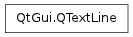

QTextLine ¶

Synopsis ¶
Functions ¶
- def ascent ()
- def cursorToX (cursorPos[, edge=Leading])
- def descent ()
- def draw (p, point[, selection=0])
- def height ()
- def horizontalAdvance ()
- def isValid ()
- def layout_helper (numGlyphs)
- def leading ()
- def leadingIncluded ()
- def lineNumber ()
- def naturalTextRect ()
- def naturalTextWidth ()
- def position ()
- def rect ()
- def setLeadingIncluded (included)
- def setLineWidth (width)
- def setNumColumns (columns)
- def setNumColumns (columns, alignmentWidth)
- def setPosition (pos)
- def textLength ()
- def textStart ()
- def width ()
- def x ()
- def xToCursor (x[, edge=CursorBetweenCharacters])
- def y ()
Detailed Description ¶
The PySide.QtGui.QTextLine class represents a line of text inside a PySide.QtGui.QTextLayout .
A text line is usually created by QTextLayout.createLine() .
After being created, the line can be filled using the PySide.QtGui.QTextLine.setLineWidth() or PySide.QtGui.QTextLine.setNumColumns() functions. A line has a number of attributes including the rectangle it occupies, PySide.QtGui.QTextLine.rect() , its coordinates, PySide.QtGui.QTextLine.x() and PySide.QtGui.QTextLine.y() , its PySide.QtGui.QTextLine.textLength() , PySide.QtGui.QTextLine.width() and PySide.QtGui.QTextLine.naturalTextWidth() , and its PySide.QtGui.QTextLine.ascent() and decent() relative to the text. The position of the cursor in terms of the line is available from PySide.QtGui.QTextLine.cursorToX() and its inverse from PySide.QtGui.QTextLine.xToCursor() . A line can be moved with PySide.QtGui.QTextLine.setPosition() .
- class PySide.QtGui. QTextLine ¶
- class PySide.QtGui. QTextLine ( QTextLine )
-
Parameters: QTextLine – PySide.QtGui.QTextLine Creates an invalid line.
- PySide.QtGui.QTextLine. Edge ¶
-
Constant Description QTextLine.Leading QTextLine.Trailing
- PySide.QtGui.QTextLine. CursorPosition ¶
-
Constant Description QTextLine.CursorBetweenCharacters QTextLine.CursorOnCharacter
- PySide.QtGui.QTextLine. ascent ( ) ¶
-
Return type: PySide.QtCore.qreal Returns the line’s ascent.
- PySide.QtGui.QTextLine. cursorToX ( cursorPos [ , edge=Leading ] ) ¶
-
Parameters: - cursorPos – PySide.QtCore.int
- edge – PySide.QtGui.QTextLine.Edge
Return type: PyObject
This is an overloaded function.
- PySide.QtGui.QTextLine. descent ( ) ¶
-
Return type: PySide.QtCore.qreal Returns the line’s descent.
- PySide.QtGui.QTextLine. draw ( p , point [ , selection=0 ] ) ¶
-
Parameters: - p – PySide.QtGui.QPainter
- point – PySide.QtCore.QPointF
- selection – PySide.QtGui.QTextLayout::FormatRange
- PySide.QtGui.QTextLine. height ( ) ¶
-
Return type: PySide.QtCore.qreal Returns the line’s height. This is equal to PySide.QtGui.QTextLine.ascent() + PySide.QtGui.QTextLine.descent() + 1 if leading is not included. If leading is included, this equals to PySide.QtGui.QTextLine.ascent() + PySide.QtGui.QTextLine.descent() + PySide.QtGui.QTextLine.leading() + 1.
- PySide.QtGui.QTextLine. horizontalAdvance ( ) ¶
-
Return type: PySide.QtCore.qreal Returns the horizontal advance of the text. The advance of the text is the distance from its position to the next position at which text would naturally be drawn.
By adding the advance to the position of the text line and using this as the position of a second text line, you will be able to position the two lines side-by-side without gaps in-between.
- PySide.QtGui.QTextLine. isValid ( ) ¶
-
Return type: PySide.QtCore.bool Returns true if this text line is valid; otherwise returns false.
- PySide.QtGui.QTextLine. layout_helper ( numGlyphs ) ¶
-
Parameters: numGlyphs – PySide.QtCore.int
- PySide.QtGui.QTextLine. leading ( ) ¶
-
Return type: PySide.QtCore.qreal Returns the line’s leading.
- PySide.QtGui.QTextLine. leadingIncluded ( ) ¶
-
Return type: PySide.QtCore.bool Returns true if positive leading is included into the line’s height; otherwise returns false.
By default, leading is not included.
- PySide.QtGui.QTextLine. lineNumber ( ) ¶
-
Return type: PySide.QtCore.int Returns the position of the line in the text engine.
- PySide.QtGui.QTextLine. naturalTextRect ( ) ¶
-
Return type: PySide.QtCore.QRectF Returns the rectangle covered by the line.
- PySide.QtGui.QTextLine. naturalTextWidth ( ) ¶
-
Return type: PySide.QtCore.qreal Returns the width of the line that is occupied by text. This is always <= to PySide.QtGui.QTextLine.width() , and is the minimum width that could be used by layout() without changing the line break position.
- PySide.QtGui.QTextLine. position ( ) ¶
-
Return type: PySide.QtCore.QPointF Returns the line’s position relative to the text layout’s position.
See also
- PySide.QtGui.QTextLine. rect ( ) ¶
-
Return type: PySide.QtCore.QRectF Returns the line’s bounding rectangle.
- PySide.QtGui.QTextLine. setLeadingIncluded ( included ) ¶
-
Parameters: included – PySide.QtCore.bool Includes positive leading into the line’s height if included is true; otherwise does not include leading.
By default, leading is not included.
Note that negative leading is ignored, it must be handled in the code using the text lines by letting the lines overlap.
- PySide.QtGui.QTextLine. setLineWidth ( width ) ¶
-
Parameters: width – PySide.QtCore.qreal Lays out the line with the given width . The line is filled from its starting position with as many characters as will fit into the line. In case the text cannot be split at the end of the line, it will be filled with additional characters to the next whitespace or end of the text.
- PySide.QtGui.QTextLine. setNumColumns ( columns ) ¶
-
Parameters: columns – PySide.QtCore.int Lays out the line. The line is filled from its starting position with as many characters as are specified by numColumns . In case the text cannot be split until numColumns characters, the line will be filled with as many characters to the next whitespace or end of the text.
- PySide.QtGui.QTextLine. setNumColumns ( columns , alignmentWidth )
-
Parameters: - columns – PySide.QtCore.int
- alignmentWidth – PySide.QtCore.qreal
Lays out the line. The line is filled from its starting position with as many characters as are specified by numColumns . In case the text cannot be split until numColumns characters, the line will be filled with as many characters to the next whitespace or end of the text. The provided alignmentWidth is used as reference width for alignment.
- PySide.QtGui.QTextLine. setPosition ( pos ) ¶
-
Parameters: pos – PySide.QtCore.QPointF Moves the line to position pos .
See also
- PySide.QtGui.QTextLine. textLength ( ) ¶
-
Return type: PySide.QtCore.int Returns the length of the text in the line.
- PySide.QtGui.QTextLine. textStart ( ) ¶
-
Return type: PySide.QtCore.int Returns the start of the line from the beginning of the string passed to the PySide.QtGui.QTextLayout .
- PySide.QtGui.QTextLine. width ( ) ¶
-
Return type: PySide.QtCore.qreal Returns the line’s width as specified by the layout() function.
- PySide.QtGui.QTextLine. x ( ) ¶
-
Return type: PySide.QtCore.qreal Returns the line’s x position.
- PySide.QtGui.QTextLine. xToCursor ( x [ , edge=CursorBetweenCharacters ] ) ¶
-
Parameters: - x – PySide.QtCore.qreal
- edge – PySide.QtGui.QTextLine.CursorPosition
Return type: PySide.QtCore.int
Converts the x-coordinate x , to the nearest matching cursor position, depending on the cursor position type, cpos .
See also
- PySide.QtGui.QTextLine. y ( ) ¶
-
Return type: PySide.QtCore.qreal Returns the line’s y position.